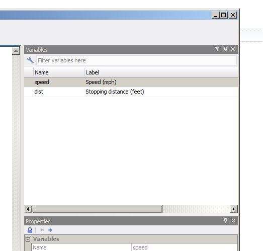

Chapter 4 The tidyverse
The tidyverse is the name given to a certain number of packages, most of all (if not all?) developed by, or co-developed by, Hadley Wickham. There’s a website that introduces them all: The tidyverse. In this chapter, we are going to learn about some functions of some of these packages. We already know a little bit about purrr; let’s discover what these other packages have to offer!
4.1 Getting to know the tidyverse
Before reading everything that follows, I’d suggest you watch Hadley Wickham’s talk Expressing yourself with R. R is a computer language, and as with any language we really are writing things that are supposed to be read and understood by others, not just the computer. Even if you’re working alone, you owe it to your future self to write clean, easy to understand code. Using the tidyverse and adopting the principles presented in the talk will put you in the right mindset for everything that follows!
First of all, let’s install the tidyverse packages. You can install them one by one, or you can install the tidyverse meta-package:
install.packages("tidyverse")I suggest you do just that, as we’re going to skim over all the packages. To start an analysis, we first have to import data into R.
4.1.1 Smoking is bad for you, but pipes are your friend
The title of this section might sound weird at first, but by the end of it, you’ll get this (terrible) pun.
You probably know the following painting by René Magritte, La trahison des images:
knitr::include_graphics("assets/pas_une_pipe.png")It turns out there’s an R package from the tidyverse that is called magrittr. What does this package do? It brings pipes to R. Pipes are a concept from the Unix operating system; if you’re using a GNU+Linux distribution or macOS, you’re basically using a modern unix. (That’s an oversimplification, but I’m an economist by training, and outrageously oversimplifying things is what we do, deal with it.)
The idea of pipes is to take the output of a command, and feed it as the input of another command. The magrittr package brings pipes to R, by using the weird looking %>%. Try the following:
library(magrittr)16 %>% sqrt## [1] 4Super weird right? But you probably understand what happened; 16 got fed as the first argument of the function sqrt(). You can chain multiple functions:
16 %>% sqrt %>% `+`(18)## [1] 22The output of 16 (16) got fed to sqrt(), and the output of sqrt(16) (4) got fed to +(18) (22). Without %>% you’d write the line just above like this:
sqrt(16) + 18## [1] 22It might not be very clear right now why this is useful, but the %>% is probably one of the best things that R has, because when using packages from the tidyverse, you will naturally want to chain a lot of functions together. Without the %>% it would become messy very fast.
%>% is not the only pipe operator in magrittr. There’s %T%, %<>% and %$%. All have their uses, but are basically shortcuts to some common tasks with %>% plus another function. Which means that you can live without them, and because of this, I will only discuss them briefly once we’ll have learned about the other tidyverse packages.
4.1.2 Getting data into R with readr, readxl, haven and what are tibbles
You probably already know how to import data in R, but maybe you are not familiar with these packages. Using them is pretty straightforward, and I will only discuss haven a little bit more than readr or readxl. readr allows you to import *.csv files as well as other files in plain text. The functions included in readr are fairly straightforward, but there is an aspect that I really like about them: if they fail to read your data you can get a report of what went wrong with the problems() function. I suggest you read the Data import chapter of R for Data Science, to get to know readr better. But for our purposes, knowing the basic read_csv() function is enough.
readxl is very similar to readr but focuses on importing Excel sheets into R. Read more about it on the tidyverse website.
haven imports data from STATA, SAS and SPSS. I’m going into a bit more detail here, by showing an example with a STATA file. STATA files are usually labelled, and I’d like to show how to work with these labels using R. We’re going to work with the mtcars dataset. I used STATA 14 to label the variables; so the dataset looks like one you could have to work with one day.
mtcars_stata <- haven::read_dta("assets/mtcars.dta")
head(mtcars_stata)## # A tibble: 6 x 12
## car mpg cyl disp hp drat wt qsec vs am
## <chr> <dbl> <dbl> <dbl> <dbl> <dbl> <dbl> <dbl> <dbl> <dbl>
## 1 Mazda RX4 21.0 6 160 110 3.90 2.620 16.46 0 1
## 2 Mazda RX4 Wag 21.0 6 160 110 3.90 2.875 17.02 0 1
## 3 Datsun 710 22.8 4 108 93 3.85 2.320 18.61 1 1
## 4 Hornet 4 Drive 21.4 6 258 110 3.08 3.215 19.44 1 0
## 5 Hornet Sportabout 18.7 8 360 175 3.15 3.440 17.02 0 0
## 6 Valiant 18.1 6 225 105 2.76 3.460 20.22 1 0
## # ... with 2 more variables: gear <dbl>, carb <dbl>You don’t see it here, but the columns are labelled. Try the following:
str(mtcars_stata$car)## atomic [1:32] Mazda RX4 Mazda RX4 Wag Datsun 710 Hornet 4 Drive ...
## - attr(*, "label")= chr "Make and model of the car"
## - attr(*, "format.stata")= chr "%19s"As you can see, the car column has the label attribute, which equals “Make and model of the car”. The other columns are also labelled:
str(mtcars_stata$cyl)## atomic [1:32] 6 6 4 6 8 6 8 4 4 6 ...
## - attr(*, "label")= chr "Number of cylinders"
## - attr(*, "format.stata")= chr "%8.0g"str(mtcars_stata$am)## atomic [1:32] 1 1 1 0 0 0 0 0 0 0 ...
## - attr(*, "label")= chr "Transmission (0 = automatic, 1 = manual)"
## - attr(*, "format.stata")= chr "%8.0g"Another way to get the label is to use the attr() function:
attr(mtcars_stata$cyl, "label")## [1] "Number of cylinders"Let’s use what we learned until now to get the labels of all the columns:
show_labels <- function(dataset){
map(dataset, function(col)(attr(col, "label")))
}
show_labels(mtcars_stata)## $car
## [1] "Make and model of the car"
##
## $mpg
## [1] "Miles/(US) gallon"
##
## $cyl
## [1] "Number of cylinders"
##
## $disp
## [1] "Displacement (cu.in.)"
##
## $hp
## [1] "Gross horsepower"
##
## $drat
## [1] "Rear axle ratio"
##
## $wt
## [1] "Weight (1000 lbs)"
##
## $qsec
## [1] "1/4 mile time"
##
## $vs
## [1] "V/S"
##
## $am
## [1] "Transmission (0 = automatic, 1 = manual)"
##
## $gear
## [1] "Number of forward gears"
##
## $carb
## [1] "Number of carburetors"Could we label any dataset and then export it to a .dta file and have the labels in STATA? Let’s find out with the cars dataset:
data(cars)
attr(cars$speed, "label") <- "Speed (mph)"
attr(cars$dist, "label") <- "Stopping distance (feet)"
haven::write_dta(cars, "assets/cars.dta")Below you see that cars.dta file opened in STATA:

When you use any of the discussed packages to import data, the resulting object is a tibble. tibbles are modern day ‘data.frame’s. The first thing you might have noticed is when you print a tibble vs a ’data.frame’:
data(mtcars)
print(mtcars)## mpg cyl disp hp drat wt qsec vs am gear carb
## Mazda RX4 21.0 6 160.0 110 3.90 2.620 16.46 0 1 4 4
## Mazda RX4 Wag 21.0 6 160.0 110 3.90 2.875 17.02 0 1 4 4
## Datsun 710 22.8 4 108.0 93 3.85 2.320 18.61 1 1 4 1
## Hornet 4 Drive 21.4 6 258.0 110 3.08 3.215 19.44 1 0 3 1
## Hornet Sportabout 18.7 8 360.0 175 3.15 3.440 17.02 0 0 3 2
## Valiant 18.1 6 225.0 105 2.76 3.460 20.22 1 0 3 1
## Duster 360 14.3 8 360.0 245 3.21 3.570 15.84 0 0 3 4
## Merc 240D 24.4 4 146.7 62 3.69 3.190 20.00 1 0 4 2
## Merc 230 22.8 4 140.8 95 3.92 3.150 22.90 1 0 4 2
## Merc 280 19.2 6 167.6 123 3.92 3.440 18.30 1 0 4 4
## Merc 280C 17.8 6 167.6 123 3.92 3.440 18.90 1 0 4 4
## Merc 450SE 16.4 8 275.8 180 3.07 4.070 17.40 0 0 3 3
## Merc 450SL 17.3 8 275.8 180 3.07 3.730 17.60 0 0 3 3
## Merc 450SLC 15.2 8 275.8 180 3.07 3.780 18.00 0 0 3 3
## Cadillac Fleetwood 10.4 8 472.0 205 2.93 5.250 17.98 0 0 3 4
## Lincoln Continental 10.4 8 460.0 215 3.00 5.424 17.82 0 0 3 4
## Chrysler Imperial 14.7 8 440.0 230 3.23 5.345 17.42 0 0 3 4
## Fiat 128 32.4 4 78.7 66 4.08 2.200 19.47 1 1 4 1
## Honda Civic 30.4 4 75.7 52 4.93 1.615 18.52 1 1 4 2
## Toyota Corolla 33.9 4 71.1 65 4.22 1.835 19.90 1 1 4 1
## Toyota Corona 21.5 4 120.1 97 3.70 2.465 20.01 1 0 3 1
## Dodge Challenger 15.5 8 318.0 150 2.76 3.520 16.87 0 0 3 2
## AMC Javelin 15.2 8 304.0 150 3.15 3.435 17.30 0 0 3 2
## Camaro Z28 13.3 8 350.0 245 3.73 3.840 15.41 0 0 3 4
## Pontiac Firebird 19.2 8 400.0 175 3.08 3.845 17.05 0 0 3 2
## Fiat X1-9 27.3 4 79.0 66 4.08 1.935 18.90 1 1 4 1
## Porsche 914-2 26.0 4 120.3 91 4.43 2.140 16.70 0 1 5 2
## Lotus Europa 30.4 4 95.1 113 3.77 1.513 16.90 1 1 5 2
## Ford Pantera L 15.8 8 351.0 264 4.22 3.170 14.50 0 1 5 4
## Ferrari Dino 19.7 6 145.0 175 3.62 2.770 15.50 0 1 5 6
## Maserati Bora 15.0 8 301.0 335 3.54 3.570 14.60 0 1 5 8
## Volvo 142E 21.4 4 121.0 109 4.11 2.780 18.60 1 1 4 2print(mtcars_stata)## # A tibble: 32 x 12
## car mpg cyl disp hp drat wt qsec vs am
## <chr> <dbl> <dbl> <dbl> <dbl> <dbl> <dbl> <dbl> <dbl> <dbl>
## 1 Mazda RX4 21.0 6 160.0 110 3.90 2.620 16.46 0 1
## 2 Mazda RX4 Wag 21.0 6 160.0 110 3.90 2.875 17.02 0 1
## 3 Datsun 710 22.8 4 108.0 93 3.85 2.320 18.61 1 1
## 4 Hornet 4 Drive 21.4 6 258.0 110 3.08 3.215 19.44 1 0
## 5 Hornet Sportabout 18.7 8 360.0 175 3.15 3.440 17.02 0 0
## 6 Valiant 18.1 6 225.0 105 2.76 3.460 20.22 1 0
## 7 Duster 360 14.3 8 360.0 245 3.21 3.570 15.84 0 0
## 8 Merc 240D 24.4 4 146.7 62 3.69 3.190 20.00 1 0
## 9 Merc 230 22.8 4 140.8 95 3.92 3.150 22.90 1 0
## 10 Merc 280 19.2 6 167.6 123 3.92 3.440 18.30 1 0
## # ... with 22 more rows, and 2 more variables: gear <dbl>, carb <dbl>Only the first 10 lines of the tibble get printed, but the number of remaining lines and the names of the columns that didn’t find are shown as well as the types of the columns.
You can easily create a tibble from vectors:
library(tibble)
set.seed(123)
example <- tibble(a = seq(1,5), b = rnorm(5), c = rpois(5, 3))
print(example)## # A tibble: 5 x 3
## a b c
## <int> <dbl> <int>
## 1 1 -0.56047565 6
## 2 2 -0.23017749 3
## 3 3 1.55870831 4
## 4 4 0.07050839 3
## 5 5 0.12928774 1Even better than print(), there’s glimpse():
glimpse(mtcars_stata)## Observations: 32
## Variables: 12
## $ car <chr> "Mazda RX4", "Mazda RX4 Wag", "Datsun 710", "Hornet 4 Dri...
## $ mpg <dbl> 21.0, 21.0, 22.8, 21.4, 18.7, 18.1, 14.3, 24.4, 22.8, 19....
## $ cyl <dbl> 6, 6, 4, 6, 8, 6, 8, 4, 4, 6, 6, 8, 8, 8, 8, 8, 8, 4, 4, ...
## $ disp <dbl> 160.0, 160.0, 108.0, 258.0, 360.0, 225.0, 360.0, 146.7, 1...
## $ hp <dbl> 110, 110, 93, 110, 175, 105, 245, 62, 95, 123, 123, 180, ...
## $ drat <dbl> 3.90, 3.90, 3.85, 3.08, 3.15, 2.76, 3.21, 3.69, 3.92, 3.9...
## $ wt <dbl> 2.620, 2.875, 2.320, 3.215, 3.440, 3.460, 3.570, 3.190, 3...
## $ qsec <dbl> 16.46, 17.02, 18.61, 19.44, 17.02, 20.22, 15.84, 20.00, 2...
## $ vs <dbl> 0, 0, 1, 1, 0, 1, 0, 1, 1, 1, 1, 0, 0, 0, 0, 0, 0, 1, 1, ...
## $ am <dbl> 1, 1, 1, 0, 0, 0, 0, 0, 0, 0, 0, 0, 0, 0, 0, 0, 0, 1, 1, ...
## $ gear <dbl> 4, 4, 4, 3, 3, 3, 3, 4, 4, 4, 4, 3, 3, 3, 3, 3, 3, 4, 4, ...
## $ carb <dbl> 4, 4, 1, 1, 2, 1, 4, 2, 2, 4, 4, 3, 3, 3, 4, 4, 4, 1, 2, ...tibbles are lazy, which means that something like this is valid:
set.seed(123)
example <- tibble(a = seq(1,5), b = rnorm(5), c = 10 * b)
glimpse(example)## Observations: 5
## Variables: 3
## $ a <int> 1, 2, 3, 4, 5
## $ b <dbl> -0.56047565, -0.23017749, 1.55870831, 0.07050839, 0.12928774
## $ c <dbl> -5.6047565, -2.3017749, 15.5870831, 0.7050839, 1.2928774The tibble package contains some other useful functions, such as tribble(), which allows you to create a tibble row by row:
set.seed(123)
example <- tribble(
~a, ~b, ~c,
1, 2, "spam",
3, 4, "eggs",
5, 6, "bacon"
)
glimpse(example)## Observations: 3
## Variables: 3
## $ a <dbl> 1, 3, 5
## $ b <dbl> 2, 4, 6
## $ c <chr> "spam", "eggs", "bacon"Another thing I find very useful is the following:
mtcars$m## [1] 21.0 21.0 22.8 21.4 18.7 18.1 14.3 24.4 22.8 19.2 17.8 16.4 17.3 15.2
## [15] 10.4 10.4 14.7 32.4 30.4 33.9 21.5 15.5 15.2 13.3 19.2 27.3 26.0 30.4
## [29] 15.8 19.7 15.0 21.4mtcars_stata$m## Warning: Unknown or uninitialised column: 'm'.## NULLmtcars$m shows the mpg column… for some reason. There might be a good reason for this, but I prefer tibbles’ behaviour of notifying the user that this column does not exist.
It is possible to convert a lot of objects into tibbles:
example <- matrix(rnorm(36), nrow = 6)
as_tibble(example)## # A tibble: 6 x 6
## V1 V2 V3 V4 V5 V6
## <dbl> <dbl> <dbl> <dbl> <dbl> <dbl>
## 1 -0.56047565 0.4609162 0.4007715 0.7013559 -0.6250393 0.4264642
## 2 -0.23017749 -1.2650612 0.1106827 -0.4727914 -1.6866933 -0.2950715
## 3 1.55870831 -0.6868529 -0.5558411 -1.0678237 0.8377870 0.8951257
## 4 0.07050839 -0.4456620 1.7869131 -0.2179749 0.1533731 0.8781335
## 5 0.12928774 1.2240818 0.4978505 -1.0260044 -1.1381369 0.8215811
## 6 1.71506499 0.3598138 -1.9666172 -0.7288912 1.2538149 0.6886403example_df <- as.data.frame(example)
as_tibble(example_df)## # A tibble: 6 x 6
## V1 V2 V3 V4 V5 V6
## <dbl> <dbl> <dbl> <dbl> <dbl> <dbl>
## 1 -0.56047565 0.4609162 0.4007715 0.7013559 -0.6250393 0.4264642
## 2 -0.23017749 -1.2650612 0.1106827 -0.4727914 -1.6866933 -0.2950715
## 3 1.55870831 -0.6868529 -0.5558411 -1.0678237 0.8377870 0.8951257
## 4 0.07050839 -0.4456620 1.7869131 -0.2179749 0.1533731 0.8781335
## 5 0.12928774 1.2240818 0.4978505 -1.0260044 -1.1381369 0.8215811
## 6 1.71506499 0.3598138 -1.9666172 -0.7288912 1.2538149 0.6886403example_list <- list(a = seq(1,5), b = seq(6, 10))
as_tibble(example_list)## # A tibble: 5 x 2
## a b
## <int> <int>
## 1 1 6
## 2 2 7
## 3 3 8
## 4 4 9
## 5 5 10You can also convert named vectors to tibbles with enframe:
recipe <- c("spam" = 1, "eggs" = 3, "bacon" = 10)
enframe(recipe, "ingredients", "quantity")## # A tibble: 3 x 2
## ingredients quantity
## <chr> <dbl>
## 1 spam 1
## 2 eggs 3
## 3 bacon 10Contrast this to as_tibble() or as as.data.frame():
as.data.frame(recipe)## recipe
## spam 1
## eggs 3
## bacon 10as_tibble(recipe)## # A tibble: 3 x 1
## value
## * <dbl>
## 1 1
## 2 3
## 3 10There are a lot of other functions in the tibble package that you might find useful. I suggest you take a look at all of them and see what you can integrate in your workflow!
4.1.3 Transforming your data with dplyr and tidyr
You may have never heard of the tidyverse, but you most certainly heard about dplyr and tidyr. Both these packages are probably the most popular packages of the tidyverse. Even if you know these packages already, you might not be using some more advanced functions, I’m talking about the scoped version of the usual dplyr verbs (dplyr verbs is how Hadley Wickham refers to the functions included in the package: group_by(), select(), etc).
This is going to be long, so prepare some coffee, lock the door to your study, turn off your phone and buckle up.
4.1.3.1 filter() and friends
We’re going to use the Gasoline dataset from the plm package, so install that first:
install.packages("plm")Then load the required data:
data(Gasoline, package = "plm")and load dplyr:
library(dplyr)##
## Attaching package: 'dplyr'## The following objects are masked from 'package:purrr':
##
## contains, order_by## The following objects are masked from 'package:stats':
##
## filter, lag## The following objects are masked from 'package:base':
##
## intersect, setdiff, setequal, unionThis dataset gives the consumption of gasoline for 18 countries from 1960 to 1978. When you load the data like this, it is a standard data.frame. dplyr functions can be used on standard data.frame objects, but just because we learned about tibble’s, let’s convert the data to a tibble and change its name:
gasoline <- as_tibble(Gasoline)filter() is pretty straightforward. What if you would like to subset the data to focus on the year 1969? Simple:
filter(gasoline, year == 1969)## # A tibble: 18 x 6
## country year lgaspcar lincomep lrpmg lcarpcap
## <fctr> <int> <dbl> <dbl> <dbl> <dbl>
## 1 AUSTRIA 1969 4.046355 -6.153140 -0.5591105 -8.788686
## 2 BELGIUM 1969 3.854601 -5.857532 -0.3548085 -8.521453
## 3 CANADA 1969 4.864433 -5.560853 -1.0368639 -8.095113
## 4 DENMARK 1969 4.173561 -5.722769 -0.4068792 -8.470459
## 5 FRANCE 1969 3.773460 -5.840774 -0.3151909 -8.369136
## 6 GERMANY 1969 3.899185 -5.829641 -0.5892314 -8.438061
## 7 GREECE 1969 4.894773 -6.591104 -0.1798700 -10.713848
## 8 IRELAND 1969 4.208613 -6.379743 -0.2716284 -8.947265
## 9 ITALY 1969 3.737389 -6.282857 -0.2475668 -8.666004
## 10 JAPAN 1969 4.518290 -6.159308 -0.4168502 -9.607600
## 11 NETHERLA 1969 3.987689 -5.880556 -0.4169496 -8.634102
## 12 NORWAY 1969 4.086823 -5.735319 -0.3382305 -8.694593
## 13 SPAIN 1969 3.994103 -5.601046 0.6694895 -9.720425
## 14 SWEDEN 1969 3.991715 -7.771081 -2.7319041 -8.197462
## 15 SWITZERL 1969 4.211290 -5.912172 -0.9181216 -8.473379
## 16 TURKEY 1969 5.720705 -7.388646 -0.2984542 -12.518545
## 17 U.K. 1969 3.948058 -6.031953 -0.3833246 -8.468119
## 18 U.S.A. 1969 4.841383 -5.414374 -1.2231427 -7.792706Remember the pipe operator, %>% from the start of this chapter? Here’s how this would work with it:
gasoline %>% filter(year == 1969)## # A tibble: 18 x 6
## country year lgaspcar lincomep lrpmg lcarpcap
## <fctr> <int> <dbl> <dbl> <dbl> <dbl>
## 1 AUSTRIA 1969 4.046355 -6.153140 -0.5591105 -8.788686
## 2 BELGIUM 1969 3.854601 -5.857532 -0.3548085 -8.521453
## 3 CANADA 1969 4.864433 -5.560853 -1.0368639 -8.095113
## 4 DENMARK 1969 4.173561 -5.722769 -0.4068792 -8.470459
## 5 FRANCE 1969 3.773460 -5.840774 -0.3151909 -8.369136
## 6 GERMANY 1969 3.899185 -5.829641 -0.5892314 -8.438061
## 7 GREECE 1969 4.894773 -6.591104 -0.1798700 -10.713848
## 8 IRELAND 1969 4.208613 -6.379743 -0.2716284 -8.947265
## 9 ITALY 1969 3.737389 -6.282857 -0.2475668 -8.666004
## 10 JAPAN 1969 4.518290 -6.159308 -0.4168502 -9.607600
## 11 NETHERLA 1969 3.987689 -5.880556 -0.4169496 -8.634102
## 12 NORWAY 1969 4.086823 -5.735319 -0.3382305 -8.694593
## 13 SPAIN 1969 3.994103 -5.601046 0.6694895 -9.720425
## 14 SWEDEN 1969 3.991715 -7.771081 -2.7319041 -8.197462
## 15 SWITZERL 1969 4.211290 -5.912172 -0.9181216 -8.473379
## 16 TURKEY 1969 5.720705 -7.388646 -0.2984542 -12.518545
## 17 U.K. 1969 3.948058 -6.031953 -0.3833246 -8.468119
## 18 U.S.A. 1969 4.841383 -5.414374 -1.2231427 -7.792706So gasoline, which is a tibble object, is passed as the first argument of the filter() function. Starting now, we’re only going to use these pipes. You will see why soon enough, so bear with me.
You can also filter more than just one year, by using the %in% operator:
gasoline %>% filter(year %in% seq(1969, 1973))## # A tibble: 90 x 6
## country year lgaspcar lincomep lrpmg lcarpcap
## <fctr> <int> <dbl> <dbl> <dbl> <dbl>
## 1 AUSTRIA 1969 4.046355 -6.153140 -0.5591105 -8.788686
## 2 AUSTRIA 1970 4.080888 -6.081712 -0.5965612 -8.728200
## 3 AUSTRIA 1971 4.106720 -6.043626 -0.6544591 -8.635898
## 4 AUSTRIA 1972 4.128018 -5.981052 -0.5963318 -8.538338
## 5 AUSTRIA 1973 4.199381 -5.895153 -0.5944468 -8.487289
## 6 BELGIUM 1969 3.854601 -5.857532 -0.3548085 -8.521453
## 7 BELGIUM 1970 3.870392 -5.797201 -0.3779404 -8.453043
## 8 BELGIUM 1971 3.872245 -5.761050 -0.3992299 -8.409457
## 9 BELGIUM 1972 3.905402 -5.710230 -0.3106458 -8.362588
## 10 BELGIUM 1973 3.895996 -5.644145 -0.3730919 -8.314447
## # ... with 80 more rowsor even non-consecutive years:
gasoline %>% filter(year %in% c(1969, 1973, 1977))## # A tibble: 54 x 6
## country year lgaspcar lincomep lrpmg lcarpcap
## <fctr> <int> <dbl> <dbl> <dbl> <dbl>
## 1 AUSTRIA 1969 4.046355 -6.153140 -0.5591105 -8.788686
## 2 AUSTRIA 1973 4.199381 -5.895153 -0.5944468 -8.487289
## 3 AUSTRIA 1977 3.931676 -5.833288 -0.4219156 -8.249563
## 4 BELGIUM 1969 3.854601 -5.857532 -0.3548085 -8.521453
## 5 BELGIUM 1973 3.895996 -5.644145 -0.3730919 -8.314447
## 6 BELGIUM 1977 3.854311 -5.556697 -0.4316413 -8.138534
## 7 CANADA 1969 4.864433 -5.560853 -1.0368639 -8.095113
## 8 CANADA 1973 4.899694 -5.414753 -1.1331614 -7.942140
## 9 CANADA 1977 4.810992 -5.336967 -1.0708445 -7.768793
## 10 DENMARK 1969 4.173561 -5.722769 -0.4068792 -8.470459
## # ... with 44 more rows%in% tests if an object is part of a set.
filter() is not the only filtering verb there is. Suppose that we have a condition that we want to use to filter out a lot of columns at once. For example, for every column that is of type numeric, keep only the lines where the condition value > -8 is satisfied. The next line does that:
gasoline %>% filter_if( ~all(is.numeric(.)), all_vars(. > -8))## # A tibble: 30 x 6
## country year lgaspcar lincomep lrpmg lcarpcap
## <fctr> <int> <dbl> <dbl> <dbl> <dbl>
## 1 CANADA 1972 4.889302 -5.436603 -1.0996670 -7.989531
## 2 CANADA 1973 4.899694 -5.414753 -1.1331614 -7.942140
## 3 CANADA 1974 4.891591 -5.418456 -1.1238000 -7.900758
## 4 CANADA 1975 4.888471 -5.379097 -1.1856843 -7.873313
## 5 CANADA 1976 4.837359 -5.361285 -1.0617966 -7.808425
## 6 CANADA 1977 4.810992 -5.336967 -1.0708445 -7.768793
## 7 CANADA 1978 4.855846 -5.311272 -1.0749507 -7.788061
## 8 GERMANY 1978 3.883879 -5.561733 -0.6281728 -7.950079
## 9 SWEDEN 1975 3.973840 -7.679557 -2.7673146 -7.994217
## 10 SWEDEN 1976 3.983997 -7.672043 -2.8229448 -7.956066
## # ... with 20 more rowsIt’s a bit more complicated than before. filter_if() needs 3 arguments to work; the data, a predicate function (a function that returns TRUE, or FALSE) which will select the columns we want to work on, and then the condition. The condition can be applied to all the columns that were selected by the predicate function (hence the all_vars()) or only to at least one (you’d use any_vars() then). Try to change the condition, or the predicate function, to figure out how filter_if() works. The dot is a placeholder that stands for whatever columns where selected.
filter_at() works differently; it allows the user to filter columns by position:
gasoline %>% filter_at(vars(ends_with("p")), all_vars(. > -8))## # A tibble: 30 x 6
## country year lgaspcar lincomep lrpmg lcarpcap
## <fctr> <int> <dbl> <dbl> <dbl> <dbl>
## 1 CANADA 1972 4.889302 -5.436603 -1.0996670 -7.989531
## 2 CANADA 1973 4.899694 -5.414753 -1.1331614 -7.942140
## 3 CANADA 1974 4.891591 -5.418456 -1.1238000 -7.900758
## 4 CANADA 1975 4.888471 -5.379097 -1.1856843 -7.873313
## 5 CANADA 1976 4.837359 -5.361285 -1.0617966 -7.808425
## 6 CANADA 1977 4.810992 -5.336967 -1.0708445 -7.768793
## 7 CANADA 1978 4.855846 -5.311272 -1.0749507 -7.788061
## 8 GERMANY 1978 3.883879 -5.561733 -0.6281728 -7.950079
## 9 SWEDEN 1975 3.973840 -7.679557 -2.7673146 -7.994217
## 10 SWEDEN 1976 3.983997 -7.672043 -2.8229448 -7.956066
## # ... with 20 more rowsend_with() is a helper function that we are going to use a lot (as well as starts_with() and some others, you’ll see..). So the above line means “for the columns whose name end with a ‘p’ only keep the lines where, for all the selected columns, the values are strictly superior to -8”. Again, this is not very easy the first time you deal with that, so play around with it for a bit.
filter_all(), as the name implies, considers all variables for the filtering step.
filter_if() and filter_at() are very useful when you have very large datasets with a lot of variables and you want to apply a filtering function only to a subset of them. filter_all() is useful if, for example, you only want to keep the positive values for all the columns.
4.1.3.2 select() and its helpers
While filter() and its scoped versions allow you to keep or discard rows of data, select() (and its scoped versions) allow you to keep or discard entire columns. To keep columns:
gasoline %>% select(country, year, lrpmg)## # A tibble: 342 x 3
## country year lrpmg
## * <fctr> <int> <dbl>
## 1 AUSTRIA 1960 -0.3345476
## 2 AUSTRIA 1961 -0.3513276
## 3 AUSTRIA 1962 -0.3795177
## 4 AUSTRIA 1963 -0.4142514
## 5 AUSTRIA 1964 -0.4453354
## 6 AUSTRIA 1965 -0.4970607
## 7 AUSTRIA 1966 -0.4668377
## 8 AUSTRIA 1967 -0.5058834
## 9 AUSTRIA 1968 -0.5224125
## 10 AUSTRIA 1969 -0.5591105
## # ... with 332 more rowsTo discard them:
gasoline %>% select(-country, -year, -lrpmg)## # A tibble: 342 x 3
## lgaspcar lincomep lcarpcap
## * <dbl> <dbl> <dbl>
## 1 4.173244 -6.474277 -9.766840
## 2 4.100989 -6.426006 -9.608622
## 3 4.073177 -6.407308 -9.457257
## 4 4.059509 -6.370679 -9.343155
## 5 4.037689 -6.322247 -9.237739
## 6 4.033983 -6.294668 -9.123903
## 7 4.047537 -6.252545 -9.019822
## 8 4.052911 -6.234581 -8.934403
## 9 4.045507 -6.206894 -8.847967
## 10 4.046355 -6.153140 -8.788686
## # ... with 332 more rowsTo rename them:
gasoline %>% select(country, date = year, lrpmg)## # A tibble: 342 x 3
## country date lrpmg
## * <fctr> <int> <dbl>
## 1 AUSTRIA 1960 -0.3345476
## 2 AUSTRIA 1961 -0.3513276
## 3 AUSTRIA 1962 -0.3795177
## 4 AUSTRIA 1963 -0.4142514
## 5 AUSTRIA 1964 -0.4453354
## 6 AUSTRIA 1965 -0.4970607
## 7 AUSTRIA 1966 -0.4668377
## 8 AUSTRIA 1967 -0.5058834
## 9 AUSTRIA 1968 -0.5224125
## 10 AUSTRIA 1969 -0.5591105
## # ... with 332 more rowsThere’s also rename(), but it works a bit differently:
gasoline %>% rename(date = year)## # A tibble: 342 x 6
## country date lgaspcar lincomep lrpmg lcarpcap
## * <fctr> <int> <dbl> <dbl> <dbl> <dbl>
## 1 AUSTRIA 1960 4.173244 -6.474277 -0.3345476 -9.766840
## 2 AUSTRIA 1961 4.100989 -6.426006 -0.3513276 -9.608622
## 3 AUSTRIA 1962 4.073177 -6.407308 -0.3795177 -9.457257
## 4 AUSTRIA 1963 4.059509 -6.370679 -0.4142514 -9.343155
## 5 AUSTRIA 1964 4.037689 -6.322247 -0.4453354 -9.237739
## 6 AUSTRIA 1965 4.033983 -6.294668 -0.4970607 -9.123903
## 7 AUSTRIA 1966 4.047537 -6.252545 -0.4668377 -9.019822
## 8 AUSTRIA 1967 4.052911 -6.234581 -0.5058834 -8.934403
## 9 AUSTRIA 1968 4.045507 -6.206894 -0.5224125 -8.847967
## 10 AUSTRIA 1969 4.046355 -6.153140 -0.5591105 -8.788686
## # ... with 332 more rowsrename() does not do any kind of selection, but just renames.
To re-order them:
gasoline %>% select(year, country, lrpmg, everything())## # A tibble: 342 x 6
## year country lrpmg lgaspcar lincomep lcarpcap
## * <int> <fctr> <dbl> <dbl> <dbl> <dbl>
## 1 1960 AUSTRIA -0.3345476 4.173244 -6.474277 -9.766840
## 2 1961 AUSTRIA -0.3513276 4.100989 -6.426006 -9.608622
## 3 1962 AUSTRIA -0.3795177 4.073177 -6.407308 -9.457257
## 4 1963 AUSTRIA -0.4142514 4.059509 -6.370679 -9.343155
## 5 1964 AUSTRIA -0.4453354 4.037689 -6.322247 -9.237739
## 6 1965 AUSTRIA -0.4970607 4.033983 -6.294668 -9.123903
## 7 1966 AUSTRIA -0.4668377 4.047537 -6.252545 -9.019822
## 8 1967 AUSTRIA -0.5058834 4.052911 -6.234581 -8.934403
## 9 1968 AUSTRIA -0.5224125 4.045507 -6.206894 -8.847967
## 10 1969 AUSTRIA -0.5591105 4.046355 -6.153140 -8.788686
## # ... with 332 more rowseverything() is another of those helper functions (like starts_with(), and ends_with()). What if we are only interested in columns whose name start with “l”?
gasoline %>% select(starts_with("l"))## # A tibble: 342 x 4
## lgaspcar lincomep lrpmg lcarpcap
## * <dbl> <dbl> <dbl> <dbl>
## 1 4.173244 -6.474277 -0.3345476 -9.766840
## 2 4.100989 -6.426006 -0.3513276 -9.608622
## 3 4.073177 -6.407308 -0.3795177 -9.457257
## 4 4.059509 -6.370679 -0.4142514 -9.343155
## 5 4.037689 -6.322247 -0.4453354 -9.237739
## 6 4.033983 -6.294668 -0.4970607 -9.123903
## 7 4.047537 -6.252545 -0.4668377 -9.019822
## 8 4.052911 -6.234581 -0.5058834 -8.934403
## 9 4.045507 -6.206894 -0.5224125 -8.847967
## 10 4.046355 -6.153140 -0.5591105 -8.788686
## # ... with 332 more rowsThe same can be achieved with select_at():
gasoline %>% select_at(vars(starts_with("l")))## # A tibble: 342 x 4
## lgaspcar lincomep lrpmg lcarpcap
## * <dbl> <dbl> <dbl> <dbl>
## 1 4.173244 -6.474277 -0.3345476 -9.766840
## 2 4.100989 -6.426006 -0.3513276 -9.608622
## 3 4.073177 -6.407308 -0.3795177 -9.457257
## 4 4.059509 -6.370679 -0.4142514 -9.343155
## 5 4.037689 -6.322247 -0.4453354 -9.237739
## 6 4.033983 -6.294668 -0.4970607 -9.123903
## 7 4.047537 -6.252545 -0.4668377 -9.019822
## 8 4.052911 -6.234581 -0.5058834 -8.934403
## 9 4.045507 -6.206894 -0.5224125 -8.847967
## 10 4.046355 -6.153140 -0.5591105 -8.788686
## # ... with 332 more rowsselect_at() can be quite useful if you know the position of the columns you’re interested in:
gasoline %>% select_at(vars(c(1,2,5)))## # A tibble: 342 x 3
## country year lrpmg
## * <fctr> <int> <dbl>
## 1 AUSTRIA 1960 -0.3345476
## 2 AUSTRIA 1961 -0.3513276
## 3 AUSTRIA 1962 -0.3795177
## 4 AUSTRIA 1963 -0.4142514
## 5 AUSTRIA 1964 -0.4453354
## 6 AUSTRIA 1965 -0.4970607
## 7 AUSTRIA 1966 -0.4668377
## 8 AUSTRIA 1967 -0.5058834
## 9 AUSTRIA 1968 -0.5224125
## 10 AUSTRIA 1969 -0.5591105
## # ... with 332 more rowsThis also works with filter_at() by the way.
select_if() makes it easy to select columns that satisfy a criterium:
gasoline %>% select_if(is.numeric)## # A tibble: 342 x 5
## year lgaspcar lincomep lrpmg lcarpcap
## * <int> <dbl> <dbl> <dbl> <dbl>
## 1 1960 4.173244 -6.474277 -0.3345476 -9.766840
## 2 1961 4.100989 -6.426006 -0.3513276 -9.608622
## 3 1962 4.073177 -6.407308 -0.3795177 -9.457257
## 4 1963 4.059509 -6.370679 -0.4142514 -9.343155
## 5 1964 4.037689 -6.322247 -0.4453354 -9.237739
## 6 1965 4.033983 -6.294668 -0.4970607 -9.123903
## 7 1966 4.047537 -6.252545 -0.4668377 -9.019822
## 8 1967 4.052911 -6.234581 -0.5058834 -8.934403
## 9 1968 4.045507 -6.206894 -0.5224125 -8.847967
## 10 1969 4.046355 -6.153140 -0.5591105 -8.788686
## # ... with 332 more rowsYou can even pass a further function to select_if() that will be applied to the selected columns:
gasoline %>% select_if(is.numeric, toupper)## # A tibble: 342 x 5
## YEAR LGASPCAR LINCOMEP LRPMG LCARPCAP
## * <int> <dbl> <dbl> <dbl> <dbl>
## 1 1960 4.173244 -6.474277 -0.3345476 -9.766840
## 2 1961 4.100989 -6.426006 -0.3513276 -9.608622
## 3 1962 4.073177 -6.407308 -0.3795177 -9.457257
## 4 1963 4.059509 -6.370679 -0.4142514 -9.343155
## 5 1964 4.037689 -6.322247 -0.4453354 -9.237739
## 6 1965 4.033983 -6.294668 -0.4970607 -9.123903
## 7 1966 4.047537 -6.252545 -0.4668377 -9.019822
## 8 1967 4.052911 -6.234581 -0.5058834 -8.934403
## 9 1968 4.045507 -6.206894 -0.5224125 -8.847967
## 10 1969 4.046355 -6.153140 -0.5591105 -8.788686
## # ... with 332 more rowsAnother verb, similar to select(), is pull(). Let’s compare the two:
gasoline %>% select(lrpmg)## # A tibble: 342 x 1
## lrpmg
## * <dbl>
## 1 -0.3345476
## 2 -0.3513276
## 3 -0.3795177
## 4 -0.4142514
## 5 -0.4453354
## 6 -0.4970607
## 7 -0.4668377
## 8 -0.5058834
## 9 -0.5224125
## 10 -0.5591105
## # ... with 332 more rowsgasoline %>% pull(lrpmg)## [1] -0.33454761 -0.35132761 -0.37951769 -0.41425139 -0.44533536
## [6] -0.49706066 -0.46683773 -0.50588340 -0.52241255 -0.55911051
## [11] -0.59656122 -0.65445914 -0.59633184 -0.59444681 -0.46602693
## [16] -0.45414221 -0.50008372 -0.42191563 -0.46960312 -0.16570961
## [21] -0.17173098 -0.22229138 -0.25046225 -0.27591057 -0.34493695
## [26] -0.23639770 -0.26699499 -0.31116076 -0.35480852 -0.37794044
## [31] -0.39922992 -0.31064584 -0.37309192 -0.36223563 -0.36430848
## [36] -0.37896584 -0.43164133 -0.59094964 -0.97210650 -0.97229024
## [41] -0.97860756 -1.01904791 -1.00285696 -1.01712549 -1.01694436
## [46] -1.02359713 -1.01984524 -1.03686389 -1.06733308 -1.05803676
## [51] -1.09966703 -1.13316142 -1.12379997 -1.18568427 -1.06179659
## [56] -1.07084448 -1.07495073 -0.19570260 -0.25361844 -0.21875400
## [61] -0.24800936 -0.30654923 -0.32701542 -0.39618846 -0.44257369
## [66] -0.35204752 -0.40687922 -0.44046082 -0.45473954 -0.49918863
## [71] -0.43257185 -0.42517720 -0.39395431 -0.35361534 -0.35690917
## [76] -0.29068135 -0.01959833 -0.02386000 -0.06892022 -0.13792900
## [81] -0.19784646 -0.23365325 -0.26427164 -0.29405795 -0.32316179
## [86] -0.31519087 -0.33384616 -0.37945667 -0.40781642 -0.47503429
## [91] -0.21698191 -0.25838174 -0.24651309 -0.22550681 -0.38075942
## [96] -0.18591078 -0.23095384 -0.34384171 -0.37464672 -0.39965256
## [101] -0.43987825 -0.54000197 -0.54998139 -0.43824222 -0.58923137
## [106] -0.63329520 -0.67176311 -0.71797458 -0.72587521 -0.56982876
## [111] -0.56482380 -0.62481298 -0.59761210 -0.62817279 -0.08354740
## [116] -0.10421997 -0.13320751 -0.15653576 -0.18051772 -0.07793999
## [121] -0.11491900 -0.13775849 -0.15375883 -0.17986997 -0.20252426
## [126] -0.06761078 -0.11973059 -0.05191029 0.31625351 0.20631574
## [131] 0.19319312 0.23502961 0.16896037 -0.07648118 -0.12040874
## [136] -0.14160039 -0.15232915 -0.24428212 -0.16899366 -0.21071901
## [141] -0.17383533 -0.21339314 -0.27162842 -0.32069023 -0.36041067
## [146] -0.42393131 -0.64567297 -0.55343875 -0.64126416 -0.66134256
## [151] -0.56011483 -0.66277808 0.16507708 -0.08559038 -0.18351291
## [156] -0.26541405 -0.42609643 -0.32712637 -0.24887418 -0.19160048
## [161] -0.20616656 -0.24756681 -0.23271512 -0.14822267 -0.21508857
## [166] -0.32508487 -0.22290860 -0.03270913 0.10292798 0.16418805
## [171] 0.03482212 -0.14532271 -0.14874940 -0.18731459 -0.19996473
## [176] -0.20386433 -0.23786571 -0.27411537 -0.33167240 -0.35126918
## [181] -0.41685019 -0.46203546 -0.43941354 -0.52100094 -0.46270739
## [186] -0.19090636 -0.15948473 -0.20726559 -0.21904447 -0.28707638
## [191] -0.20148480 -0.21599265 -0.25968008 -0.29718661 -0.36929389
## [196] -0.34197503 -0.34809007 -0.31232019 -0.44450431 -0.41694955
## [201] -0.39954544 -0.43393029 -0.31903240 -0.42728193 -0.35253685
## [206] -0.43426178 -0.42908393 -0.46474195 -0.55791459 -0.13968957
## [211] -0.15790514 -0.19908809 -0.23263318 -0.26374731 -0.31593124
## [216] -0.25011726 -0.26555763 -0.30036775 -0.33823045 -0.39072560
## [221] -0.30127223 -0.26023925 -0.33880765 -0.15100924 -0.32726757
## [226] -0.35308752 -0.38255762 -0.30765935 1.12531070 1.10956235
## [231] 1.05700394 0.97683534 0.91532254 0.81666055 0.75671751
## [236] 0.74130811 0.70386453 0.66948950 0.61217208 0.60699563
## [241] 0.53716844 0.43377166 0.52492096 0.62955545 0.68385409
## [246] 0.52627167 0.62141374 -2.52041588 -2.57148340 -2.53448158
## [251] -2.60511224 -2.65801626 -2.64476790 -2.63901460 -2.65609762
## [256] -2.67918662 -2.73190414 -2.73359211 -2.77884554 -2.77467537
## [261] -2.84142900 -2.79840677 -2.76731461 -2.82294480 -2.82005896
## [266] -2.89649671 -0.82321833 -0.86558473 -0.82218510 -0.86012004
## [271] -0.86767682 -0.90528668 -0.85956665 -0.90656671 -0.87232520
## [276] -0.91812162 -0.96344188 -1.03746081 -0.94015345 -0.86722756
## [281] -0.88692306 -0.88475790 -0.90736205 -0.91147285 -1.03208811
## [286] -0.25340821 -0.34252375 -0.40820484 -0.22499174 -0.25219448
## [291] -0.29347614 -0.35640491 -0.33515022 -0.36507386 -0.29845417
## [296] -0.39882648 -0.30461880 -0.54637424 -0.69162023 -0.33965308
## [301] -0.53794675 -0.75141027 -0.95552413 -0.35290961 -0.39108581
## [306] -0.45185308 -0.42287690 -0.46335147 -0.49577430 -0.42654915
## [311] -0.47068145 -0.44118786 -0.46245080 -0.38332457 -0.41899030
## [316] -0.46135978 -0.52777246 -0.56529718 -0.56641296 -0.20867428
## [321] -0.27354010 -0.50886285 -0.78652911 -1.12111489 -1.14624034
## [326] -1.16187449 -1.17991524 -1.20026222 -1.19428750 -1.19026054
## [331] -1.18991215 -1.20730059 -1.22314272 -1.25176347 -1.28131560
## [336] -1.33116930 -1.29066967 -1.23146686 -1.20037697 -1.15468197
## [341] -1.17590974 -1.21206183pull(), unlike select(), does not return a tibble, but only the atomic vector.
4.1.3.3 group_by()
group_by() is a very useful verb; as the name implies, it allows you to create groups and then, for example, compute descriptive statistics by groups. For example, let’s group our data by country:
gasoline %>% group_by(country)## # A tibble: 342 x 6
## # Groups: country [18]
## country year lgaspcar lincomep lrpmg lcarpcap
## * <fctr> <int> <dbl> <dbl> <dbl> <dbl>
## 1 AUSTRIA 1960 4.173244 -6.474277 -0.3345476 -9.766840
## 2 AUSTRIA 1961 4.100989 -6.426006 -0.3513276 -9.608622
## 3 AUSTRIA 1962 4.073177 -6.407308 -0.3795177 -9.457257
## 4 AUSTRIA 1963 4.059509 -6.370679 -0.4142514 -9.343155
## 5 AUSTRIA 1964 4.037689 -6.322247 -0.4453354 -9.237739
## 6 AUSTRIA 1965 4.033983 -6.294668 -0.4970607 -9.123903
## 7 AUSTRIA 1966 4.047537 -6.252545 -0.4668377 -9.019822
## 8 AUSTRIA 1967 4.052911 -6.234581 -0.5058834 -8.934403
## 9 AUSTRIA 1968 4.045507 -6.206894 -0.5224125 -8.847967
## 10 AUSTRIA 1969 4.046355 -6.153140 -0.5591105 -8.788686
## # ... with 332 more rowsIt looks like nothing much happened, but if you look at the second line of the output you can read the followi{r} ## # Groups: country [18]
this means that the data is grouped, and every computation you will do now will take these groups into account. This will be clearer in the next subsection.
It is also possible to group according to various variables:
gasoline %>% group_by(country, year)## # A tibble: 342 x 6
## # Groups: country, year [342]
## country year lgaspcar lincomep lrpmg lcarpcap
## * <fctr> <int> <dbl> <dbl> <dbl> <dbl>
## 1 AUSTRIA 1960 4.173244 -6.474277 -0.3345476 -9.766840
## 2 AUSTRIA 1961 4.100989 -6.426006 -0.3513276 -9.608622
## 3 AUSTRIA 1962 4.073177 -6.407308 -0.3795177 -9.457257
## 4 AUSTRIA 1963 4.059509 -6.370679 -0.4142514 -9.343155
## 5 AUSTRIA 1964 4.037689 -6.322247 -0.4453354 -9.237739
## 6 AUSTRIA 1965 4.033983 -6.294668 -0.4970607 -9.123903
## 7 AUSTRIA 1966 4.047537 -6.252545 -0.4668377 -9.019822
## 8 AUSTRIA 1967 4.052911 -6.234581 -0.5058834 -8.934403
## 9 AUSTRIA 1968 4.045507 -6.206894 -0.5224125 -8.847967
## 10 AUSTRIA 1969 4.046355 -6.153140 -0.5591105 -8.788686
## # ... with 332 more rowsand so on. You can then also ungroup:
gasoline %>% group_by(country, year) %>% ungroup()## # A tibble: 342 x 6
## country year lgaspcar lincomep lrpmg lcarpcap
## * <fctr> <int> <dbl> <dbl> <dbl> <dbl>
## 1 AUSTRIA 1960 4.173244 -6.474277 -0.3345476 -9.766840
## 2 AUSTRIA 1961 4.100989 -6.426006 -0.3513276 -9.608622
## 3 AUSTRIA 1962 4.073177 -6.407308 -0.3795177 -9.457257
## 4 AUSTRIA 1963 4.059509 -6.370679 -0.4142514 -9.343155
## 5 AUSTRIA 1964 4.037689 -6.322247 -0.4453354 -9.237739
## 6 AUSTRIA 1965 4.033983 -6.294668 -0.4970607 -9.123903
## 7 AUSTRIA 1966 4.047537 -6.252545 -0.4668377 -9.019822
## 8 AUSTRIA 1967 4.052911 -6.234581 -0.5058834 -8.934403
## 9 AUSTRIA 1968 4.045507 -6.206894 -0.5224125 -8.847967
## 10 AUSTRIA 1969 4.046355 -6.153140 -0.5591105 -8.788686
## # ... with 332 more rows4.1.3.4 summarise()
Ok, now that we have learned the basic verbs, we can start to do more interesting stuff. For example, one might want to compute the average gasoline consumption per car in each country, for the whole period:
gasoline %>%
group_by(country) %>%
summarise(mean(lgaspcar))## # A tibble: 18 x 2
## country `mean(lgaspcar)`
## <fctr> <dbl>
## 1 AUSTRIA 4.056487
## 2 BELGIUM 3.922286
## 3 CANADA 4.862402
## 4 DENMARK 4.189886
## 5 FRANCE 3.815198
## 6 GERMANY 3.893389
## 7 GREECE 4.878679
## 8 IRELAND 4.225560
## 9 ITALY 3.729646
## 10 JAPAN 4.699642
## 11 NETHERLA 4.080338
## 12 NORWAY 4.109773
## 13 SPAIN 4.055314
## 14 SWEDEN 4.006055
## 15 SWITZERL 4.237586
## 16 TURKEY 5.766355
## 17 U.K. 3.984685
## 18 U.S.A. 4.819075mean() was given as an argument to summarise(), which is a dplyr verb. What we get is another tibble, that contains the variable we used to group, as well as the average per country. We can also rename this column:
gasoline %>%
group_by(country) %>%
summarise(mean_gaspcar = mean(lgaspcar))## # A tibble: 18 x 2
## country mean_gaspcar
## <fctr> <dbl>
## 1 AUSTRIA 4.056487
## 2 BELGIUM 3.922286
## 3 CANADA 4.862402
## 4 DENMARK 4.189886
## 5 FRANCE 3.815198
## 6 GERMANY 3.893389
## 7 GREECE 4.878679
## 8 IRELAND 4.225560
## 9 ITALY 3.729646
## 10 JAPAN 4.699642
## 11 NETHERLA 4.080338
## 12 NORWAY 4.109773
## 13 SPAIN 4.055314
## 14 SWEDEN 4.006055
## 15 SWITZERL 4.237586
## 16 TURKEY 5.766355
## 17 U.K. 3.984685
## 18 U.S.A. 4.819075and because the output is a tibble, we can contain to use dplyr verbs on it:
gasoline %>%
group_by(country) %>%
summarise(mean_gaspcar = mean(lgaspcar)) %>%
filter(country == "FRANCE")## # A tibble: 1 x 2
## country mean_gaspcar
## <fctr> <dbl>
## 1 FRANCE 3.815198Ok, let’s pause here. See what I did in the last example? I chained 3 dplyr verbs together with %>%. Without using %>% I would have written:
filter(
summarise(
group_by(gasoline, country),
mean_gaspcar = mean(lgaspcar)),
country == "FRANCE")## # A tibble: 1 x 2
## country mean_gaspcar
## <fctr> <dbl>
## 1 FRANCE 3.815198I don’t know about you, but this is much more difficult to read than the version with %>%. It is possible to work like that, of course, but personally, I would advise you bite the bullet and learn to love the pipe. It won’t give you cancer.
Ok, back to summarise(). We can really do a lot of stuff with this verb. For example, we can compute several descriptive statistics at once:
gasoline %>%
group_by(country) %>%
summarise(mean_gaspcar = mean(lgaspcar), sd_gaspcar = sd(lgaspcar), max_gaspcar = max(lgaspcar), min_gaspcar = min(lgaspcar))## # A tibble: 18 x 5
## country mean_gaspcar sd_gaspcar max_gaspcar min_gaspcar
## <fctr> <dbl> <dbl> <dbl> <dbl>
## 1 AUSTRIA 4.056487 0.06929942 4.199381 3.922750
## 2 BELGIUM 3.922286 0.10339189 4.164016 3.818230
## 3 CANADA 4.862402 0.02618377 4.899694 4.810992
## 4 DENMARK 4.189886 0.15819728 4.501986 4.000461
## 5 FRANCE 3.815198 0.04986425 3.908116 3.749535
## 6 GERMANY 3.893389 0.02389849 3.932402 3.848782
## 7 GREECE 4.878679 0.25467445 5.381495 4.479956
## 8 IRELAND 4.225560 0.04369894 4.325585 4.164896
## 9 ITALY 3.729646 0.22001527 4.050728 3.380209
## 10 JAPAN 4.699642 0.68411717 5.995287 3.948746
## 11 NETHERLA 4.080338 0.28642682 4.646268 3.711384
## 12 NORWAY 4.109773 0.12306866 4.435041 3.960331
## 13 SPAIN 4.055314 0.31696784 4.749409 3.620444
## 14 SWEDEN 4.006055 0.03639626 4.067373 3.913159
## 15 SWITZERL 4.237586 0.10178743 4.441330 4.050048
## 16 TURKEY 5.766355 0.32901391 6.156644 5.141255
## 17 U.K. 3.984685 0.04787887 4.100244 3.912584
## 18 U.S.A. 4.819075 0.02189802 4.860286 4.787895Because the output is a tibble, you can save it in a variable of course:
desc_gasoline <- gasoline %>%
group_by(country) %>%
summarise(mean_gaspcar = mean(lgaspcar), sd_gaspcar = sd(lgaspcar), max_gaspcar = max(lgaspcar), min_gaspcar = min(lgaspcar))And then you can answer questions such as, which country has the maximum average gasoline consumption per car?:
desc_gasoline %>%
filter(max(mean_gaspcar) == mean_gaspcar)## # A tibble: 1 x 5
## country mean_gaspcar sd_gaspcar max_gaspcar min_gaspcar
## <fctr> <dbl> <dbl> <dbl> <dbl>
## 1 TURKEY 5.766355 0.3290139 6.156644 5.141255Turns out it’s Turkey. What about the minimum consumption?
desc_gasoline %>%
filter(min(mean_gaspcar) == mean_gaspcar)## # A tibble: 1 x 5
## country mean_gaspcar sd_gaspcar max_gaspcar min_gaspcar
## <fctr> <dbl> <dbl> <dbl> <dbl>
## 1 ITALY 3.729646 0.2200153 4.050728 3.380209Just like for filter() and select(), summarise() comes with scoped versions:
gasoline %>%
group_by(country) %>%
summarise_at(vars(starts_with("l")), mean)## # A tibble: 18 x 5
## country lgaspcar lincomep lrpmg lcarpcap
## <fctr> <dbl> <dbl> <dbl> <dbl>
## 1 AUSTRIA 4.056487 -6.119613 -0.48578185 -8.848114
## 2 BELGIUM 3.922286 -5.852297 -0.32575856 -8.630392
## 3 CANADA 4.862402 -5.576948 -1.04918735 -8.081975
## 4 DENMARK 4.189886 -5.756725 -0.35761243 -8.583795
## 5 FRANCE 3.815198 -5.866167 -0.25277821 -8.452957
## 6 GERMANY 3.893389 -5.845314 -0.51718417 -8.506392
## 7 GREECE 4.878679 -6.606373 -0.03391043 -10.782066
## 8 IRELAND 4.225560 -6.441571 -0.34754288 -9.035927
## 9 ITALY 3.729646 -6.350354 -0.15219273 -8.827179
## 10 JAPAN 4.699642 -6.248629 -0.28662755 -9.945087
## 11 NETHERLA 4.080338 -5.920132 -0.36977928 -8.817087
## 12 NORWAY 4.109773 -5.753316 -0.27767861 -8.765066
## 13 SPAIN 4.055314 -5.627756 0.73937888 -9.896247
## 14 SWEDEN 4.006055 -7.816214 -2.70917074 -8.250729
## 15 SWITZERL 4.237586 -5.927320 -0.90165998 -8.541029
## 16 TURKEY 5.766355 -7.336992 -0.42151399 -12.458858
## 17 U.K. 3.984685 -6.015377 -0.45929339 -8.548493
## 18 U.S.A. 4.819075 -5.448560 -1.20756453 -7.781090See how I managed to summarise every variable in one simple call to summarise_at()? Simply by using vars() and specifying that I was interested in the ones that started with “l” and then I specified the function I wanted. But what if I wanted to use more than one function to summarise the data? Very easy:
gasoline %>%
group_by(country) %>%
summarise_at(vars(starts_with("l")), funs(mean, sd, max, min))## # A tibble: 18 x 17
## country lgaspcar_mean lincomep_mean lrpmg_mean lcarpcap_mean
## <fctr> <dbl> <dbl> <dbl> <dbl>
## 1 AUSTRIA 4.056487 -6.119613 -0.48578185 -8.848114
## 2 BELGIUM 3.922286 -5.852297 -0.32575856 -8.630392
## 3 CANADA 4.862402 -5.576948 -1.04918735 -8.081975
## 4 DENMARK 4.189886 -5.756725 -0.35761243 -8.583795
## 5 FRANCE 3.815198 -5.866167 -0.25277821 -8.452957
## 6 GERMANY 3.893389 -5.845314 -0.51718417 -8.506392
## 7 GREECE 4.878679 -6.606373 -0.03391043 -10.782066
## 8 IRELAND 4.225560 -6.441571 -0.34754288 -9.035927
## 9 ITALY 3.729646 -6.350354 -0.15219273 -8.827179
## 10 JAPAN 4.699642 -6.248629 -0.28662755 -9.945087
## 11 NETHERLA 4.080338 -5.920132 -0.36977928 -8.817087
## 12 NORWAY 4.109773 -5.753316 -0.27767861 -8.765066
## 13 SPAIN 4.055314 -5.627756 0.73937888 -9.896247
## 14 SWEDEN 4.006055 -7.816214 -2.70917074 -8.250729
## 15 SWITZERL 4.237586 -5.927320 -0.90165998 -8.541029
## 16 TURKEY 5.766355 -7.336992 -0.42151399 -12.458858
## 17 U.K. 3.984685 -6.015377 -0.45929339 -8.548493
## 18 U.S.A. 4.819075 -5.448560 -1.20756453 -7.781090
## # ... with 12 more variables: lgaspcar_sd <dbl>, lincomep_sd <dbl>,
## # lrpmg_sd <dbl>, lcarpcap_sd <dbl>, lgaspcar_max <dbl>,
## # lincomep_max <dbl>, lrpmg_max <dbl>, lcarpcap_max <dbl>,
## # lgaspcar_min <dbl>, lincomep_min <dbl>, lrpmg_min <dbl>,
## # lcarpcap_min <dbl>But maybe you’re just interested in descriptive statistics for some variables, but not all those that start with “l”? What if you want to use another pattern? Easy to do with the contains() helper:
gasoline %>%
group_by(country) %>%
summarise_at(vars(contains("car")), funs(mean, sd, max, min))## # A tibble: 18 x 9
## country lgaspcar_mean lcarpcap_mean lgaspcar_sd lcarpcap_sd
## <fctr> <dbl> <dbl> <dbl> <dbl>
## 1 AUSTRIA 4.056487 -8.848114 0.06929942 0.4728231
## 2 BELGIUM 3.922286 -8.630392 0.10339189 0.4171514
## 3 CANADA 4.862402 -8.081975 0.02618377 0.1953069
## 4 DENMARK 4.189886 -8.583795 0.15819728 0.3486135
## 5 FRANCE 3.815198 -8.452957 0.04986425 0.3436969
## 6 GERMANY 3.893389 -8.506392 0.02389849 0.4060370
## 7 GREECE 4.878679 -10.782066 0.25467445 0.8388589
## 8 IRELAND 4.225560 -9.035927 0.04369894 0.3452272
## 9 ITALY 3.729646 -8.827179 0.22001527 0.6389769
## 10 JAPAN 4.699642 -9.945087 0.68411717 1.1969275
## 11 NETHERLA 4.080338 -8.817087 0.28642682 0.6173209
## 12 NORWAY 4.109773 -8.765066 0.12306866 0.4382484
## 13 SPAIN 4.055314 -9.896247 0.31696784 0.9596034
## 14 SWEDEN 4.006055 -8.250729 0.03639626 0.2422792
## 15 SWITZERL 4.237586 -8.541029 0.10178743 0.3775211
## 16 TURKEY 5.766355 -12.458858 0.32901391 0.7512506
## 17 U.K. 3.984685 -8.548493 0.04787887 0.2812851
## 18 U.S.A. 4.819075 -7.781090 0.02189802 0.1617998
## # ... with 4 more variables: lgaspcar_max <dbl>, lcarpcap_max <dbl>,
## # lgaspcar_min <dbl>, lcarpcap_min <dbl>There’s also summarise_if():
gasoline %>%
group_by(country) %>%
summarise_if(is.double, funs(mean, sd, min, max))## # A tibble: 18 x 17
## country lgaspcar_mean lincomep_mean lrpmg_mean lcarpcap_mean
## <fctr> <dbl> <dbl> <dbl> <dbl>
## 1 AUSTRIA 4.056487 -6.119613 -0.48578185 -8.848114
## 2 BELGIUM 3.922286 -5.852297 -0.32575856 -8.630392
## 3 CANADA 4.862402 -5.576948 -1.04918735 -8.081975
## 4 DENMARK 4.189886 -5.756725 -0.35761243 -8.583795
## 5 FRANCE 3.815198 -5.866167 -0.25277821 -8.452957
## 6 GERMANY 3.893389 -5.845314 -0.51718417 -8.506392
## 7 GREECE 4.878679 -6.606373 -0.03391043 -10.782066
## 8 IRELAND 4.225560 -6.441571 -0.34754288 -9.035927
## 9 ITALY 3.729646 -6.350354 -0.15219273 -8.827179
## 10 JAPAN 4.699642 -6.248629 -0.28662755 -9.945087
## 11 NETHERLA 4.080338 -5.920132 -0.36977928 -8.817087
## 12 NORWAY 4.109773 -5.753316 -0.27767861 -8.765066
## 13 SPAIN 4.055314 -5.627756 0.73937888 -9.896247
## 14 SWEDEN 4.006055 -7.816214 -2.70917074 -8.250729
## 15 SWITZERL 4.237586 -5.927320 -0.90165998 -8.541029
## 16 TURKEY 5.766355 -7.336992 -0.42151399 -12.458858
## 17 U.K. 3.984685 -6.015377 -0.45929339 -8.548493
## 18 U.S.A. 4.819075 -5.448560 -1.20756453 -7.781090
## # ... with 12 more variables: lgaspcar_sd <dbl>, lincomep_sd <dbl>,
## # lrpmg_sd <dbl>, lcarpcap_sd <dbl>, lgaspcar_min <dbl>,
## # lincomep_min <dbl>, lrpmg_min <dbl>, lcarpcap_min <dbl>,
## # lgaspcar_max <dbl>, lincomep_max <dbl>, lrpmg_max <dbl>,
## # lcarpcap_max <dbl>This allows you to summarise every column that contain real numbers (if you use is.numeric() instead, year will also be summarised, which is not really interesting).
To go faster, you can also use summarise_all():
gasoline %>%
select(-year) %>%
group_by(country) %>%
summarise_all(funs(mean, sd, min, max))## # A tibble: 18 x 17
## country lgaspcar_mean lincomep_mean lrpmg_mean lcarpcap_mean
## <fctr> <dbl> <dbl> <dbl> <dbl>
## 1 AUSTRIA 4.056487 -6.119613 -0.48578185 -8.848114
## 2 BELGIUM 3.922286 -5.852297 -0.32575856 -8.630392
## 3 CANADA 4.862402 -5.576948 -1.04918735 -8.081975
## 4 DENMARK 4.189886 -5.756725 -0.35761243 -8.583795
## 5 FRANCE 3.815198 -5.866167 -0.25277821 -8.452957
## 6 GERMANY 3.893389 -5.845314 -0.51718417 -8.506392
## 7 GREECE 4.878679 -6.606373 -0.03391043 -10.782066
## 8 IRELAND 4.225560 -6.441571 -0.34754288 -9.035927
## 9 ITALY 3.729646 -6.350354 -0.15219273 -8.827179
## 10 JAPAN 4.699642 -6.248629 -0.28662755 -9.945087
## 11 NETHERLA 4.080338 -5.920132 -0.36977928 -8.817087
## 12 NORWAY 4.109773 -5.753316 -0.27767861 -8.765066
## 13 SPAIN 4.055314 -5.627756 0.73937888 -9.896247
## 14 SWEDEN 4.006055 -7.816214 -2.70917074 -8.250729
## 15 SWITZERL 4.237586 -5.927320 -0.90165998 -8.541029
## 16 TURKEY 5.766355 -7.336992 -0.42151399 -12.458858
## 17 U.K. 3.984685 -6.015377 -0.45929339 -8.548493
## 18 U.S.A. 4.819075 -5.448560 -1.20756453 -7.781090
## # ... with 12 more variables: lgaspcar_sd <dbl>, lincomep_sd <dbl>,
## # lrpmg_sd <dbl>, lcarpcap_sd <dbl>, lgaspcar_min <dbl>,
## # lincomep_min <dbl>, lrpmg_min <dbl>, lcarpcap_min <dbl>,
## # lgaspcar_max <dbl>, lincomep_max <dbl>, lrpmg_max <dbl>,
## # lcarpcap_max <dbl>I removed the year variable because it’s not a variable for which we want to have descriptive statistics.
4.1.3.5 mutate() and transmute()
mutate() adds a column to the tibble, which can contain any transformation of any other variable:
gasoline %>%
group_by(country) %>%
mutate(n())## # A tibble: 342 x 7
## # Groups: country [18]
## country year lgaspcar lincomep lrpmg lcarpcap `n()`
## <fctr> <int> <dbl> <dbl> <dbl> <dbl> <int>
## 1 AUSTRIA 1960 4.173244 -6.474277 -0.3345476 -9.766840 19
## 2 AUSTRIA 1961 4.100989 -6.426006 -0.3513276 -9.608622 19
## 3 AUSTRIA 1962 4.073177 -6.407308 -0.3795177 -9.457257 19
## 4 AUSTRIA 1963 4.059509 -6.370679 -0.4142514 -9.343155 19
## 5 AUSTRIA 1964 4.037689 -6.322247 -0.4453354 -9.237739 19
## 6 AUSTRIA 1965 4.033983 -6.294668 -0.4970607 -9.123903 19
## 7 AUSTRIA 1966 4.047537 -6.252545 -0.4668377 -9.019822 19
## 8 AUSTRIA 1967 4.052911 -6.234581 -0.5058834 -8.934403 19
## 9 AUSTRIA 1968 4.045507 -6.206894 -0.5224125 -8.847967 19
## 10 AUSTRIA 1969 4.046355 -6.153140 -0.5591105 -8.788686 19
## # ... with 332 more rowsUsing mutate() I’ve added a column that counts how many times the country appears in the tibble, using n(), another dplyr function. It is also possible to rename the column on the fly:
gasoline %>%
group_by(country) %>%
mutate(freq = n())## # A tibble: 342 x 7
## # Groups: country [18]
## country year lgaspcar lincomep lrpmg lcarpcap freq
## <fctr> <int> <dbl> <dbl> <dbl> <dbl> <int>
## 1 AUSTRIA 1960 4.173244 -6.474277 -0.3345476 -9.766840 19
## 2 AUSTRIA 1961 4.100989 -6.426006 -0.3513276 -9.608622 19
## 3 AUSTRIA 1962 4.073177 -6.407308 -0.3795177 -9.457257 19
## 4 AUSTRIA 1963 4.059509 -6.370679 -0.4142514 -9.343155 19
## 5 AUSTRIA 1964 4.037689 -6.322247 -0.4453354 -9.237739 19
## 6 AUSTRIA 1965 4.033983 -6.294668 -0.4970607 -9.123903 19
## 7 AUSTRIA 1966 4.047537 -6.252545 -0.4668377 -9.019822 19
## 8 AUSTRIA 1967 4.052911 -6.234581 -0.5058834 -8.934403 19
## 9 AUSTRIA 1968 4.045507 -6.206894 -0.5224125 -8.847967 19
## 10 AUSTRIA 1969 4.046355 -6.153140 -0.5591105 -8.788686 19
## # ... with 332 more rowsIt is possible to do any arbitrary operation:
gasoline %>%
group_by(country) %>%
mutate(spam = exp(lgaspcar + lincomep))## # A tibble: 342 x 7
## # Groups: country [18]
## country year lgaspcar lincomep lrpmg lcarpcap spam
## <fctr> <int> <dbl> <dbl> <dbl> <dbl> <dbl>
## 1 AUSTRIA 1960 4.173244 -6.474277 -0.3345476 -9.766840 0.10015533
## 2 AUSTRIA 1961 4.100989 -6.426006 -0.3513276 -9.608622 0.09778181
## 3 AUSTRIA 1962 4.073177 -6.407308 -0.3795177 -9.457257 0.09689458
## 4 AUSTRIA 1963 4.059509 -6.370679 -0.4142514 -9.343155 0.09914524
## 5 AUSTRIA 1964 4.037689 -6.322247 -0.4453354 -9.237739 0.10181905
## 6 AUSTRIA 1965 4.033983 -6.294668 -0.4970607 -9.123903 0.10427907
## 7 AUSTRIA 1966 4.047537 -6.252545 -0.4668377 -9.019822 0.11024954
## 8 AUSTRIA 1967 4.052911 -6.234581 -0.5058834 -8.934403 0.11285291
## 9 AUSTRIA 1968 4.045507 -6.206894 -0.5224125 -8.847967 0.11516524
## 10 AUSTRIA 1969 4.046355 -6.153140 -0.5591105 -8.788686 0.12162839
## # ... with 332 more rowstransmute() is the same as mutate(), but only returns the created variable:
gasoline %>%
group_by(country) %>%
transmute(spam = exp(lgaspcar + lincomep))## Adding missing grouping variables: `country`## # A tibble: 342 x 2
## # Groups: country [18]
## country spam
## <fctr> <dbl>
## 1 AUSTRIA 0.10015533
## 2 AUSTRIA 0.09778181
## 3 AUSTRIA 0.09689458
## 4 AUSTRIA 0.09914524
## 5 AUSTRIA 0.10181905
## 6 AUSTRIA 0.10427907
## 7 AUSTRIA 0.11024954
## 8 AUSTRIA 0.11285291
## 9 AUSTRIA 0.11516524
## 10 AUSTRIA 0.12162839
## # ... with 332 more rowsmutate() and transmute() also come with scoped version:
gasoline %>%
mutate_if(is.double, exp)## # A tibble: 342 x 6
## country year lgaspcar lincomep lrpmg lcarpcap
## <fctr> <int> <dbl> <dbl> <dbl> <dbl>
## 1 AUSTRIA 1960 64.92574 0.001542614 0.7156618 5.732123e-05
## 2 AUSTRIA 1961 60.40000 0.001618904 0.7037532 6.714730e-05
## 3 AUSTRIA 1962 58.74327 0.001649458 0.6841913 7.812062e-05
## 4 AUSTRIA 1963 57.94586 0.001710998 0.6608348 8.756274e-05
## 5 AUSTRIA 1964 56.69516 0.001795904 0.6406094 9.729730e-05
## 6 AUSTRIA 1965 56.48546 0.001846122 0.6083161 1.090283e-04
## 7 AUSTRIA 1966 57.25624 0.001925547 0.6269818 1.209877e-04
## 8 AUSTRIA 1967 57.56477 0.001960451 0.6029727 1.317766e-04
## 9 AUSTRIA 1968 57.14015 0.002015487 0.5930880 1.436735e-04
## 10 AUSTRIA 1969 57.18861 0.002126794 0.5717174 1.524481e-04
## # ... with 332 more rowsgasoline %>%
mutate_at(vars(starts_with("l")), exp)## # A tibble: 342 x 6
## country year lgaspcar lincomep lrpmg lcarpcap
## <fctr> <int> <dbl> <dbl> <dbl> <dbl>
## 1 AUSTRIA 1960 64.92574 0.001542614 0.7156618 5.732123e-05
## 2 AUSTRIA 1961 60.40000 0.001618904 0.7037532 6.714730e-05
## 3 AUSTRIA 1962 58.74327 0.001649458 0.6841913 7.812062e-05
## 4 AUSTRIA 1963 57.94586 0.001710998 0.6608348 8.756274e-05
## 5 AUSTRIA 1964 56.69516 0.001795904 0.6406094 9.729730e-05
## 6 AUSTRIA 1965 56.48546 0.001846122 0.6083161 1.090283e-04
## 7 AUSTRIA 1966 57.25624 0.001925547 0.6269818 1.209877e-04
## 8 AUSTRIA 1967 57.56477 0.001960451 0.6029727 1.317766e-04
## 9 AUSTRIA 1968 57.14015 0.002015487 0.5930880 1.436735e-04
## 10 AUSTRIA 1969 57.18861 0.002126794 0.5717174 1.524481e-04
## # ... with 332 more rowsgasoline %>%
mutate_all(as.character)## # A tibble: 342 x 6
## country year lgaspcar lincomep lrpmg lcarpcap
## <chr> <chr> <chr> <chr> <chr> <chr>
## 1 AUSTRIA 1960 4.173244195 -6.474277179 -0.334547613 -9.766839569
## 2 AUSTRIA 1961 4.1009891049 -6.426005835 -0.351327614 -9.608621845
## 3 AUSTRIA 1962 4.0731765511 -6.407308295 -0.379517692 -9.457256552
## 4 AUSTRIA 1963 4.0595091239 -6.370678539 -0.414251392 -9.343154947
## 5 AUSTRIA 1964 4.037688787 -6.322246805 -0.445335362 -9.237739346
## 6 AUSTRIA 1965 4.033983285 -6.294667914 -0.497060662 -9.123903477
## 7 AUSTRIA 1966 4.0475365589 -6.252545451 -0.466837731 -9.019822048
## 8 AUSTRIA 1967 4.0529106939 -6.234580709 -0.505883405 -8.934402537
## 9 AUSTRIA 1968 4.045507048 -6.206894403 -0.522412545 -8.847967407
## 10 AUSTRIA 1969 4.0463547891 -6.153139668 -0.559110514 -8.788686207
## # ... with 332 more rowsand there are a lot of useful functions that you can use within mutate() or transmute(): lead(), lag(), dense_rank(), ntile(), cumsum(), cummax(), coalesce(), na_if(), … We are going to study some of them in the next section.
4.1.3.6 Helper functions for mutate() and transmute()
4.1.3.6.1 if_else(), case_when() and recode()
The two helper functions I use the most are probably if_else() and case_when. These two functions, combined with mutate() make it easy to create a new variable conditonally on the values of other variables. For instance, we might want to have a dummy that equals 1 if a country in the European Union (to simplify, say as of 2017) and 0 if not. First let’s create a list of countries that are in the EU:
eu_countries <- c("austria", "belgium", "bulgaria", "croatia", "republic of cyprus",
"czech republic", "denmark", "estonia", "finland", "france", "germany",
"greece", "hungary", "ireland", "italy", "latvia", "lithuania", "luxembourg",
"malta", "netherla", "poland", "portugal", "romania", "slovakia", "slovenia",
"spain", "sweden", "u.k.")I’ve had to change “netherlands” to “netherla” because that’s how the country is called in the data. Now let’s create a dummy variable that equals 1 for EU countries, ind 0 for the others:
gasoline %>%
mutate(country = tolower(country)) %>%
mutate(in_eu = if_else(country %in% eu_countries, 1, 0))## # A tibble: 342 x 7
## country year lgaspcar lincomep lrpmg lcarpcap in_eu
## <chr> <int> <dbl> <dbl> <dbl> <dbl> <dbl>
## 1 austria 1960 4.173244 -6.474277 -0.3345476 -9.766840 1
## 2 austria 1961 4.100989 -6.426006 -0.3513276 -9.608622 1
## 3 austria 1962 4.073177 -6.407308 -0.3795177 -9.457257 1
## 4 austria 1963 4.059509 -6.370679 -0.4142514 -9.343155 1
## 5 austria 1964 4.037689 -6.322247 -0.4453354 -9.237739 1
## 6 austria 1965 4.033983 -6.294668 -0.4970607 -9.123903 1
## 7 austria 1966 4.047537 -6.252545 -0.4668377 -9.019822 1
## 8 austria 1967 4.052911 -6.234581 -0.5058834 -8.934403 1
## 9 austria 1968 4.045507 -6.206894 -0.5224125 -8.847967 1
## 10 austria 1969 4.046355 -6.153140 -0.5591105 -8.788686 1
## # ... with 332 more rowsInstead of 1 and 0, we can of course use strings (I add filter(year == 1960) at the end to have a better view of what happened):
gasoline %>%
mutate(country = tolower(country)) %>%
mutate(in_eu = if_else(country %in% eu_countries, "yes", "no")) %>%
filter(year == 1960)## # A tibble: 18 x 7
## country year lgaspcar lincomep lrpmg lcarpcap in_eu
## <chr> <int> <dbl> <dbl> <dbl> <dbl> <chr>
## 1 austria 1960 4.173244 -6.474277 -0.33454761 -9.766840 yes
## 2 belgium 1960 4.164016 -6.215091 -0.16570961 -9.405527 yes
## 3 canada 1960 4.855238 -5.889713 -0.97210650 -8.378917 no
## 4 denmark 1960 4.501986 -6.061726 -0.19570260 -9.326161 yes
## 5 france 1960 3.907704 -6.264363 -0.01959833 -9.145706 yes
## 6 germany 1960 3.916953 -6.159837 -0.18591078 -9.342481 yes
## 7 greece 1960 5.037406 -7.164861 -0.08354740 -12.173814 yes
## 8 ireland 1960 4.270421 -6.722466 -0.07648118 -9.698144 yes
## 9 italy 1960 4.050728 -6.727487 0.16507708 -10.142098 yes
## 10 japan 1960 5.995287 -6.986196 -0.14532271 -12.235079 no
## 11 netherla 1960 4.646268 -6.216365 -0.20148480 -9.998449 yes
## 12 norway 1960 4.435041 -6.090356 -0.13968957 -9.675052 no
## 13 spain 1960 4.749409 -6.166085 1.12531070 -11.588403 yes
## 14 sweden 1960 4.063010 -8.072524 -2.52041588 -8.742679 yes
## 15 switzerl 1960 4.397621 -6.156074 -0.82321833 -9.262400 no
## 16 turkey 1960 6.129553 -7.801144 -0.25340821 -13.475185 no
## 17 u.k. 1960 4.100244 -6.186849 -0.39108581 -9.117623 yes
## 18 u.s.a. 1960 4.823965 -5.698374 -1.12111489 -8.019458 noI think that if_else() is fairly straightforward, especially if you know ifelse() already. You might be wondering what is the difference between these two. if_else() is stricter than ifelse() and does not do type conversion. Compare the two next lines:
ifelse(1 == 1, "0", 1)## [1] "0"if_else(1 == 1, "0", 1)Error: `false` must be type string, not doubleType conversion, especially without a warning is very dangerous. if_else()’s behaviour which consists in failing as soon as possble avoids a lot of pain and suffering, especially when programming non-interactively.
if_else() also accepts an optional argument, that allows you to specify what should be returned in case of NA:
if_else(1 == NA, 0, 1, 999)## [1] 999# Or
if_else(1 == NA, 0, 1, NA_real_)## [1] NAcase_when() can be seen as a generalization of if_else(). Whenever you want to use multiple if_else()s, that’s when you know you should use case_when() (I’m adding the filter at the end for the same reason as before, to see the output better):
gasoline %>%
mutate(country = tolower(country)) %>%
mutate(region = case_when(
country %in% c("france", "italy", "turkey", "greece", "spain") ~ "mediterranean",
country %in% c("germany", "austria", "switzerl", "belgium", "netherla") ~ "central europe",
country %in% c("canada", "u.s.a.", "u.k.", "ireland") ~ "anglosphere",
country %in% c("denmark", "norway", "sweden") ~ "nordic",
country %in% c("japan") ~ "asia")) %>%
filter(year == 1960)## # A tibble: 18 x 7
## country year lgaspcar lincomep lrpmg lcarpcap region
## <chr> <int> <dbl> <dbl> <dbl> <dbl> <chr>
## 1 austria 1960 4.173244 -6.474277 -0.33454761 -9.766840 central europe
## 2 belgium 1960 4.164016 -6.215091 -0.16570961 -9.405527 central europe
## 3 canada 1960 4.855238 -5.889713 -0.97210650 -8.378917 anglosphere
## 4 denmark 1960 4.501986 -6.061726 -0.19570260 -9.326161 nordic
## 5 france 1960 3.907704 -6.264363 -0.01959833 -9.145706 mediterranean
## 6 germany 1960 3.916953 -6.159837 -0.18591078 -9.342481 central europe
## 7 greece 1960 5.037406 -7.164861 -0.08354740 -12.173814 mediterranean
## 8 ireland 1960 4.270421 -6.722466 -0.07648118 -9.698144 anglosphere
## 9 italy 1960 4.050728 -6.727487 0.16507708 -10.142098 mediterranean
## 10 japan 1960 5.995287 -6.986196 -0.14532271 -12.235079 asia
## 11 netherla 1960 4.646268 -6.216365 -0.20148480 -9.998449 central europe
## 12 norway 1960 4.435041 -6.090356 -0.13968957 -9.675052 nordic
## 13 spain 1960 4.749409 -6.166085 1.12531070 -11.588403 mediterranean
## 14 sweden 1960 4.063010 -8.072524 -2.52041588 -8.742679 nordic
## 15 switzerl 1960 4.397621 -6.156074 -0.82321833 -9.262400 central europe
## 16 turkey 1960 6.129553 -7.801144 -0.25340821 -13.475185 mediterranean
## 17 u.k. 1960 4.100244 -6.186849 -0.39108581 -9.117623 anglosphere
## 18 u.s.a. 1960 4.823965 -5.698374 -1.12111489 -8.019458 anglosphereIf all you want is to recode values, you can use recode(). For example, the Netherlands is written as “NETHERLA” in the which is quite ugly. Same for Switzerland:
gasoline %>%
mutate(country = tolower(country)) %>%
mutate(country = recode(country, "netherla" = "netherlands", "switzerl" = "switzerland")) %>%
filter(country %in% c("netherlands", "switzerland"), year == 1960)## # A tibble: 2 x 6
## country year lgaspcar lincomep lrpmg lcarpcap
## <chr> <int> <dbl> <dbl> <dbl> <dbl>
## 1 netherlands 1960 4.646268 -6.216365 -0.2014848 -9.998449
## 2 switzerland 1960 4.397621 -6.156074 -0.8232183 -9.2624004.1.3.6.2 lead() and lag()
lead() and lag() are especially useful in econometrics. When I was doing my masters, in 4 B.d. (Before dplyr) lagging variables in panel data was quite tricky. Now, with dplyr it’s really very easy:
gasoline %>%
group_by(country) %>%
mutate(lag_lgaspcar = lag(lgaspcar)) %>%
mutate(lead_lgaspcar = lead(lgaspcar)) %>%
filter(year %in% seq(1960, 1963))## # A tibble: 72 x 8
## # Groups: country [18]
## country year lgaspcar lincomep lrpmg lcarpcap lag_lgaspcar
## <fctr> <int> <dbl> <dbl> <dbl> <dbl> <dbl>
## 1 AUSTRIA 1960 4.173244 -6.474277 -0.3345476 -9.766840 NA
## 2 AUSTRIA 1961 4.100989 -6.426006 -0.3513276 -9.608622 4.173244
## 3 AUSTRIA 1962 4.073177 -6.407308 -0.3795177 -9.457257 4.100989
## 4 AUSTRIA 1963 4.059509 -6.370679 -0.4142514 -9.343155 4.073177
## 5 BELGIUM 1960 4.164016 -6.215091 -0.1657096 -9.405527 NA
## 6 BELGIUM 1961 4.124356 -6.176843 -0.1717310 -9.303149 4.164016
## 7 BELGIUM 1962 4.075962 -6.129638 -0.2222914 -9.218070 4.124356
## 8 BELGIUM 1963 4.001266 -6.094019 -0.2504623 -9.114932 4.075962
## 9 CANADA 1960 4.855238 -5.889713 -0.9721065 -8.378917 NA
## 10 CANADA 1961 4.826555 -5.884344 -0.9722902 -8.346729 4.855238
## # ... with 62 more rows, and 1 more variables: lead_lgaspcar <dbl>To lag every variable, remember that you can use mutate_if():
gasoline %>%
group_by(country) %>%
mutate_if(is.double, lag) %>%
filter(year %in% seq(1960, 1963))## # A tibble: 72 x 6
## # Groups: country [18]
## country year lgaspcar lincomep lrpmg lcarpcap
## <fctr> <int> <dbl> <dbl> <dbl> <dbl>
## 1 AUSTRIA 1960 NA NA NA NA
## 2 AUSTRIA 1961 4.173244 -6.474277 -0.3345476 -9.766840
## 3 AUSTRIA 1962 4.100989 -6.426006 -0.3513276 -9.608622
## 4 AUSTRIA 1963 4.073177 -6.407308 -0.3795177 -9.457257
## 5 BELGIUM 1960 NA NA NA NA
## 6 BELGIUM 1961 4.164016 -6.215091 -0.1657096 -9.405527
## 7 BELGIUM 1962 4.124356 -6.176843 -0.1717310 -9.303149
## 8 BELGIUM 1963 4.075962 -6.129638 -0.2222914 -9.218070
## 9 CANADA 1960 NA NA NA NA
## 10 CANADA 1961 4.855238 -5.889713 -0.9721065 -8.378917
## # ... with 62 more rowsyou can replace lag() with lead(), but just keep in mind that the columns get transformed in place.
4.1.3.6.3 ntile()
The last helper function I will discuss is ntile(). There are some other, so do read mutate()’s documentation with help(mutate)!
If you need quantiles, you need ntile(). Let’s see how it works:
gasoline %>%
mutate(quintile = ntile(lgaspcar, 5)) %>%
mutate(decile = ntile(lgaspcar, 10)) %>%
select(country, year, lgaspcar, quintile, decile)## # A tibble: 342 x 5
## country year lgaspcar quintile decile
## <fctr> <int> <dbl> <int> <int>
## 1 AUSTRIA 1960 4.173244 3 6
## 2 AUSTRIA 1961 4.100989 3 6
## 3 AUSTRIA 1962 4.073177 3 5
## 4 AUSTRIA 1963 4.059509 3 5
## 5 AUSTRIA 1964 4.037689 3 5
## 6 AUSTRIA 1965 4.033983 3 5
## 7 AUSTRIA 1966 4.047537 3 5
## 8 AUSTRIA 1967 4.052911 3 5
## 9 AUSTRIA 1968 4.045507 3 5
## 10 AUSTRIA 1969 4.046355 3 5
## # ... with 332 more rowsquintile and decile do not hold the values but the quantile the value lies in. If you want to have a column that contains the median for instance, you can use good ol’ quantile():
gasoline %>%
group_by(country) %>%
mutate(median = quantile(lgaspcar, 0.5)) %>% # quantile(x, 0.5) is equivalent to median(x)
filter(year == 1960) %>%
select(country, year, median)## # A tibble: 18 x 3
## # Groups: country [18]
## country year median
## <fctr> <int> <dbl>
## 1 AUSTRIA 1960 4.047537
## 2 BELGIUM 1960 3.877778
## 3 CANADA 1960 4.855846
## 4 DENMARK 1960 4.161687
## 5 FRANCE 1960 3.807995
## 6 GERMANY 1960 3.889362
## 7 GREECE 1960 4.894773
## 8 IRELAND 1960 4.221146
## 9 ITALY 1960 3.737389
## 10 JAPAN 1960 4.518290
## 11 NETHERLA 1960 3.987689
## 12 NORWAY 1960 4.084607
## 13 SPAIN 1960 3.994103
## 14 SWEDEN 1960 4.002557
## 15 SWITZERL 1960 4.259159
## 16 TURKEY 1960 5.722105
## 17 U.K. 1960 3.976781
## 18 U.S.A. 1960 4.8110324.1.3.7 arrange()
arrange() re-orders the whole tibble according to values of the supplied variable:
gasoline %>%
arrange(lgaspcar)## # A tibble: 342 x 6
## country year lgaspcar lincomep lrpmg lcarpcap
## <fctr> <int> <dbl> <dbl> <dbl> <dbl>
## 1 ITALY 1977 3.380209 -6.104541 0.16418805 -8.145660
## 2 ITALY 1978 3.394504 -6.083685 0.03482212 -8.112852
## 3 ITALY 1976 3.427629 -6.119222 0.10292798 -8.167756
## 4 ITALY 1974 3.499470 -6.125844 -0.22290860 -8.262256
## 5 ITALY 1975 3.515680 -6.170100 -0.03270913 -8.217666
## 6 SPAIN 1978 3.620444 -5.285959 0.62141374 -8.634697
## 7 ITALY 1972 3.629243 -6.205654 -0.21508857 -8.380176
## 8 ITALY 1971 3.648205 -6.222602 -0.14822267 -8.470968
## 9 SPAIN 1977 3.650735 -5.299089 0.52627167 -8.727218
## 10 ITALY 1973 3.652263 -6.157297 -0.32508487 -8.316705
## # ... with 332 more rowsIf you want to re-order the tibble in descending order of the variable:
gasoline %>%
arrange(desc(lgaspcar))## # A tibble: 342 x 6
## country year lgaspcar lincomep lrpmg lcarpcap
## <fctr> <int> <dbl> <dbl> <dbl> <dbl>
## 1 TURKEY 1966 6.156644 -7.510895 -0.3564049 -12.95114
## 2 TURKEY 1960 6.129553 -7.801144 -0.2534082 -13.47518
## 3 TURKEY 1961 6.106213 -7.786727 -0.3425237 -13.38473
## 4 TURKEY 1962 6.084587 -7.836272 -0.4082048 -13.24594
## 5 TURKEY 1968 6.076595 -7.421201 -0.3650739 -12.80735
## 6 TURKEY 1963 6.075129 -7.631193 -0.2249917 -13.25505
## 7 TURKEY 1964 6.064601 -7.626898 -0.2521945 -13.21031
## 8 TURKEY 1967 6.044479 -7.460810 -0.3351502 -12.80185
## 9 JAPAN 1960 5.995287 -6.986196 -0.1453227 -12.23508
## 10 TURKEY 1965 5.823046 -7.622027 -0.2934761 -12.87934
## # ... with 332 more rowsarrange’s documentation alerts the user that re-ording by group is only possible by explicitely specifying an option:
gasoline %>%
filter(year %in% seq(1960, 1963)) %>%
group_by(country) %>%
arrange(desc(lgaspcar), .by_group = TRUE)## # A tibble: 72 x 6
## # Groups: country [18]
## country year lgaspcar lincomep lrpmg lcarpcap
## <fctr> <int> <dbl> <dbl> <dbl> <dbl>
## 1 AUSTRIA 1960 4.173244 -6.474277 -0.3345476 -9.766840
## 2 AUSTRIA 1961 4.100989 -6.426006 -0.3513276 -9.608622
## 3 AUSTRIA 1962 4.073177 -6.407308 -0.3795177 -9.457257
## 4 AUSTRIA 1963 4.059509 -6.370679 -0.4142514 -9.343155
## 5 BELGIUM 1960 4.164016 -6.215091 -0.1657096 -9.405527
## 6 BELGIUM 1961 4.124356 -6.176843 -0.1717310 -9.303149
## 7 BELGIUM 1962 4.075962 -6.129638 -0.2222914 -9.218070
## 8 BELGIUM 1963 4.001266 -6.094019 -0.2504623 -9.114932
## 9 CANADA 1960 4.855238 -5.889713 -0.9721065 -8.378917
## 10 CANADA 1962 4.850533 -5.844552 -0.9786076 -8.320512
## # ... with 62 more rows4.1.3.8 sample_n() and sample_frac()
4.1.3.9 Joining tibbles with full_join(), left_join(), right_join() and all the others
4.1.4 Functional programming with purrr and purrrlyr
4.1.5 Special packages for special kinds of data: forcats, lubridate, and stringr
4.2 Programming with the tidyverse
4.2.1 The naive approach
Functions are very powerful because by using them, we avoid repetition. This means that we must be able to write functions that allow the user to abstract over certain things, such as columns names of datasets. So for example, one would like to write a function that would look like that:
my_function(my_data, column)and in this chapter we will learn together how to do that using dplyr (version 0.70 or above).
I advise you to also read the “Programming with dplyr” vignette here, which explains with great detail the concept I will only skim in this chapter!
Consider the following code:
data(mtcars)
simple_function <- function(dataset, col_name){
dataset %>%
group_by(col_name) %>%
summarise(mean_mpg = mean(mpg)) -> dataset
return(dataset)
}When you try to run this:
simple_function(mtcars, "cyl")This is the error you get:
Error in grouped_df_impl(data, unname(vars), drop) :
Column `col_name` is unknownR is literally looking for a column called col_name in the mtcars dataset. How to solve this issue and make R understand to not take “cyl” literally as a string, but to interpret it?
4.2.2 Getting serious with rlang
One way is to use the quo() function, in conjunction with the !! operator introduced with dplyr 0.7 (but actually part of the rlang package, which gets used by dplyr seamlessly). First let’s look at the solution and then I’ll explain how it works:
library(dplyr)
simple_function <- function(dataset, col_name){
col_name <- enquo(col_name)
dataset %>%
group_by(!!col_name) %>%
summarise(mean_mpg = mean(mpg)) -> dataset
return(dataset)
}
simple_function(mtcars, cyl)## # A tibble: 3 x 2
## cyl mean_mpg
## <dbl> <dbl>
## 1 4 26.66364
## 2 6 19.74286
## 3 8 15.100004.3 Exercises
- Suppose you have an Excel workbook that contains data on three sheets. Create a function that reads entire workbooks, and that returns a list of tibbles, where each tibble is the data of one sheet (download the example Excel workbook,
example_workbook.xlsx, from theassetsfolder on the books github).